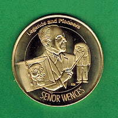

Coin comment
4/20/2012
{kind=link}
 |
| http://hofcoins.blogspot.com |
The coins arrived! Wow! I am even more impressed than I thought I would be.The detail is just incredible and I feel like I am holding the crown jewels of ventriloquism in my hand.
I want to tell you how especially gratifying it is to have the Señor Wences coin. As you might remember, Wences and his wonder wife, Tally, became friends after I would frequently visit their apartment around the corner from the Ed Sullivan Theater in Manhattan. It was then that I hatched the idea of having a 90th birthday party for Wences in Rochelle Park, NJ. With the help of Jeff Dunham, Alan Semok, the late Stanley Burns, and the late Jim Henson (along with others), we celebrated and entertained Señor Wences.
What made the day truly special for me was that my then three-year-old daughter, Mary Katherine, sat on Wences' lap for almost the entire celebration. He entertained her making napkin sculptures and drawing pictures. Mary Katherine is now 27. While she has no memory of that day I know she will enjoy the coin when she returns from Spain where Wences spent half of each year for many years. Perhaps he did make an impression on little girl.
Thanks for the flood of memories. I am so lucky that I can call two of these coin subjects friends (the other being Jimmy Nelson.)